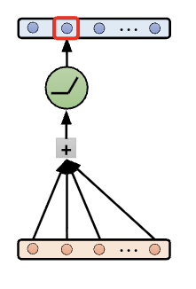
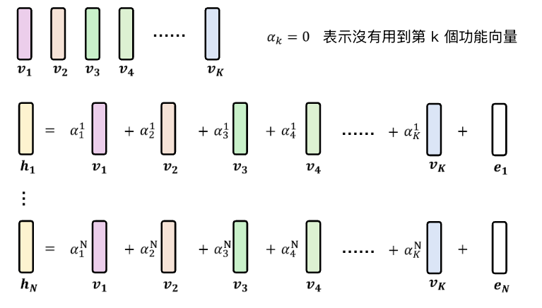
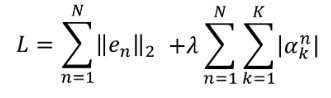
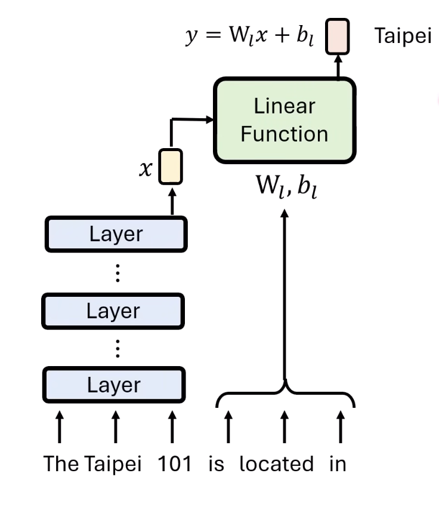
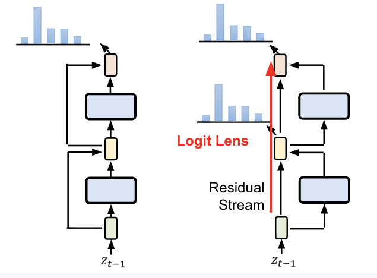
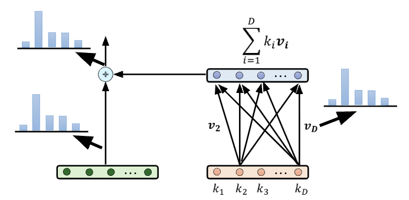

課程來源：李宏毅老師【生成式AI時代下的機器學習(2025)】第三講
（註：本篇筆記之知識內容及輔助圖片皆整理自李宏毅老師於YouTube之公開課程影片與簡報。）
超級複雜的一節課，我終於整理出來了！！!
此堂課較多技術細節，建議先學習Self Attention、Transformer、機器學習的可解釋性相關課程。
LLM內部運作常常被視為黑箱，然而我們還是有機會觀察內部是如何思考的。這堂課將從四個層次來分析語言模型內部運作機制。
1. 一個神經元的運作
語言模型處理文字的第一步，就是將輸入的Token經過Embaedding 轉換為一連串的向量（Vector Sequence）。重複進行此過程，直到最後一層，透過Unembedding 轉換為人類可讀的機率分佈。
如果只看處理單一Token的其中一層Layer，其運作就相當於一個「神經元」:
輸入一個相量 > 將向量中每個維度的數值進行加權（Weighted Sum）> 再經過一個Activation Function > 得到神經元的輸出。

-
是否能夠解釋單一神經元：
有研究嘗試觀察特定的神經元啟動時，語言模型的行為有何變化。
有成功發現一些特定的神經元，例如對川普有反應的「川普神經元」。但這樣的概念就像人類大腦科學中虛構理論「祖母神經元」類似。
現實中，很難獨立的解釋單一神經元的功能。目前大家認為一件事情可能由多個神經元共同管理，並且一個神經元可能同時管理很多事。
2. 一層神經元的行為
既然單一神經元不好觀察，就透過單一層的神經網路，觀察整體的輸出表現（Representation）。
研究假設，每個功能由特定的神經元組合啟動。可以將這些數值相加，視為一個特定的「功能向量（Functional Vector」。只要在輸入中加上或減少這些向量，就能直接操控模型的行為。例如：
- Sycophancy Vector
- Truthful Vector
- In-Context Vector
研究也發現，功能向量需要在特定layer才能發揮，並且可以進行相加相減（某些特定向量才能成功）。
-
如何尋找功能向量？
以下是課堂提到的操作方式：
目標：找出一層中的所有功能向量
步驟一：假設某層輸出的Representation（hn）為所有功能向量（Vn）與剩餘部分(e1)的組合。α代表每一個 h 為Ｖ的線組組合。

步驟二：假設多數內容為功能向量，沒有功能的en要儘量變小。並額外假設每次選擇的功能向量越少越好，讓α儘量為0，避免類似於單一神經元的答案。
這樣的假設下，會得到這個算式，使用Sparse Auto-Encoder(SAE)來解，即可達到特定Layer的輸出。

實際利用這個方法，在Claude 3 Sonnet中，找到了約有3400萬種對特定任務有反應的功能向量。
3. 一群神經元的行為
為了要理解語言模型完成一項任務時的機制，需要建立一個更簡單的「模型」。要比原來的實物簡單，同時也保有原來實物的特徵（Faithfulness）。
-
抽取知識的模型：
舉例來說，將「功能性片語」的運作，簡單化為一個線性函數（Linear Function）：y = Wx + b。
如果改變了主詞（x），這個Linear Function可以預設結果。但如果改變了代表關係的詞，則W、b就會跟著改變。

這樣的方式提供了類神經網路編輯的可能性。可以透過反推目標輸出需要的變化量，直接將變化量加入語言模型中，改變模型的實際行為。
-
系統化建構「模型的模型」：
可以進行Pruning，也就是不斷拔掉其中一部分的神經元或Self-Attention結構，觀察語言模型是否仍能夠正常運作。直到語言模型在不改變答案的情況下，變得一目瞭然。這個剩下的模型就是Circuit（語言模型的模型）。
4.讓語言模型說出想法
既然語言模型可以對話，那麼直接詢問語言模型推理的內容，其實也可以得到答案。然而，使用這種方式無法知道具體是在哪一層Layer推理和思考。
-
Residual Connection：
當單一Layer得到一排輸出後，每個輸出會跟輸入相加得到最後的輸出（左圖）。
此功能最初推出時(2015年)是為了增加Network可以訓練的層數）
若轉變觀點，可以將整個模型看作是一條資訊高速公路（Residual Stream），直接將輸入傳至輸出，而中間的每一層Layer則在分次將額外資訊加入（右圖）。
在這個觀點下，發明了Logic Lens。在模型沒有跑到最後一層以前，就對中間進行Unembedding，觀察「目前」的想法（右圖）。

- 實際應用：觀察大型語言模型LLaMa 2 的翻譯過程，發現其先將法文翻譯成英文，再翻譯成中文，內部其實一直是使用英文思考。
用同樣的想法，可以將每一層的運作，都看作一個有Ket/Value的Attention。前一層的輸出作為Attention Weight乘上對應的Value加總起來，就是傳遞給下一層的資訊。
簡單來說，輸出其實是前一層所有k，乘上對應的v再加起來的結果。
從下圖可以觀察，能夠透過Unembedding Layer將v提取出來觀察意思。只要找出被加入的V，剪掉原本的輸出內容Token Embedding，再加上目標答案的Token Embedding，就可對類神經網路模型進行初步的編輯。

然而，Logic Lens代表的只有單一Token的預測過程，仍不能代表語言模型實際在運作時，對於單詞意義的思考。
個人總結
這堂課從一個神經元的層面，講到如何直接讓語言模型說出想法。非常詳細的解說了模型內部的機制。
作為整系列最硬核的課，我先補充了過去關於Self Attention、Transformer的課程知識，這次還是在一些重點中，重新播放了好幾次才理解。能完成這些內容真的非常有成就感。
學習玩模型內部的運作機制後，每次隨興的跟AI聊天，總會想到那背後一整串複雜模型運作跟數學計算，而它們不到30秒就可以流暢回答我，某種程度來說，這也算是每天都在體驗科學奇蹟吧！